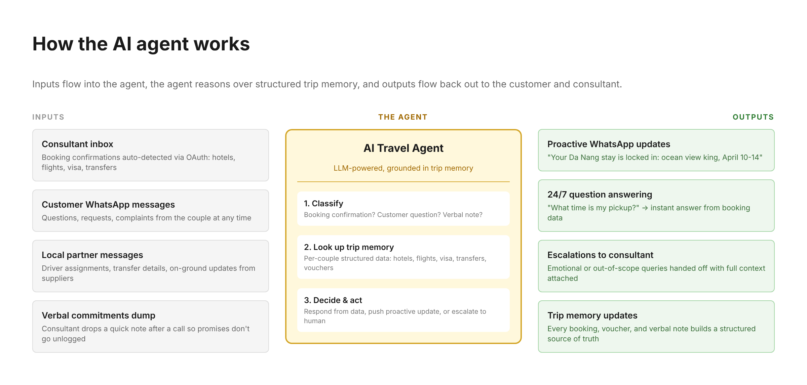

| Area | What I found |
|---|---|
| Pre-sale | Bot replies in seconds, consultant calls in 15 min. Fast, responsive, personal. |
| Payment | 100% of flights + 10% landing costs upfront = ₹60-85K on day one. |
| Post-sale | Communication slows down. Customers lose visibility into their trip status. |
| App | Post-booking app exists (itinerary, doc vault, chat) but barely adopted. Google Play: 3.4★, 28 reviews, 1K downloads. App Store: 12 ratings. Consultant didn't mention it on the call. |
Four points post-booking where anxiety spikes. In all of them, the customer can't tell if things are progressing or if something went wrong.
| When | What happens | Level |
|---|---|---|
| Day 1-2 | Payment. ₹60K+ to a company they had a 48-hour relationship with. | High |
| Day 3-10 | The Void. Consultant booking behind the scenes. Customer sees nothing. | Peak |
| Day 10-20 | Visa. Documents submitted, then silence. Rejection means losing trip + money. | Peak |
| Day 20-28 | Pre-departure. Info scattered across weeks of WhatsApp messages. | High |
Read reviews across Holidify, Google Play, and App Store. The themes below are organized by the anxiety peak they map to.
The most common complaint across all platforms. Multiple independent reviewers describe the same experience.
"Before payment, they are extremely sweet and constantly follow up. But once the payment is done, their response becomes very poor. Calls are rarely answered and messages are replied to after 2-3 days, so you have to keep chasing them." Bharati, Mumbai · Holidify · ★☆☆☆☆ · Vietnam trip
"The overall replies and modifications before booking the trip [were great]. After: lack of responsiveness. Many false commitments." Ayush Jain · Holidify
"They just take full money in advance and do not respond to any complaints." Anand Agarwal · Google Play · ★☆☆☆☆
"No flight updates before departure and zero communication throughout." Sudhanshu Dutta · Google Play · ★☆☆☆☆
Pre-payment commitments change after payment. Customers feel misled.
"I specifically confirmed the James Bond Island activity at 4 PM. Made full payment based on that. Final itinerary showed 5:30 AM checkout and 9 AM activity. When I raised the issue, they blamed 'miscommunication,' initially agreed to a partial refund, took my bank details, then denied the refund completely." Shubham Sharma, Noida · Holidify · ★☆☆☆☆ · Thailand trip with 15-month-old baby
"Promised Ubud Palace visit in writing. After advance was paid, demanded ₹3,500 extra for the same visit. Their sales team promises one thing, operations delivers the exact opposite." Naman Shukla, Delhi · Holidify · ★☆☆☆☆ · Bali honeymoon
"They said they will provide dinner buffet on the beach but they provide only 50rs packed food item and charge you heavily." sonu sinha · Google Play · ★☆☆☆☆ · Thailand trip
Customers are left to solve problems themselves. Refunds get stuck in blame loops.
"My trip coordinator had already left the company and nobody informed me or assigned another person for a long time. During the trip we were mostly on our own with almost no support." Bharati, Mumbai · Holidify · ★☆☆☆☆
"A simple refund issue has remained unresolved for over a month. The booking platform blaming the hotel and the hotel clearly confirming that the cancellation is approved. No one took clear ownership, the matter kept going in a round-robin loop." Himanshu, Gharroli · Holidify · ★☆☆☆☆ · Cancelled due to bereavement
"Due to their mistake in my wife's visa, she was denied entry at the airport. I had to stand in the Visa on Arrival line and pay the visa fee again, despite already paying this agency." Naman Shukla, Delhi · Holidify · ★☆☆☆☆
"In Hanoi, hotel told us 30 Sundays hadn't paid, so they demanded cash from us despite having paid full amount in advance." MEETALI KASHYAP, Ludhiana · Holidify · Vietnam trip with 12 people
Customers realize 30 Sundays doesn't operate trips directly. This compounds the trust gap.
"30 Sundays does not actually manage anything themselves. They simply subcontract everything to local third-party agencies. No direct tie-ups with hotels, activity providers, or driver agencies. When something goes wrong, they hide behind 'local partner' excuses." Naman Shukla, Delhi · Holidify · ★☆☆☆☆
"They do NOT provide authentic experience. They just book a local travel agency in the foreign country, that's it." Harshit Agarwall · Google Play · ★☆☆☆☆ · April 2026
"We felt we have been sold to local travel company who picked us from our hotel and toured us cheap itinerary." MEETALI KASHYAP, Ludhiana · Holidify
| Platform | Rating | Count | Note |
|---|---|---|---|
| Holidify | 3.3★ | 32 ratings, 30 reviews | Most detailed negative reviews |
| Google Play | 3.4★ | 28 reviews | Extremely polarized: 16 five-star, 11 one-star, almost nothing in between |
| App Store | 4.0★ | 12 ratings | Very low volume |
| Google Reviews | 4.6★ | 361 reviews | Multiple reviewers allege paid reviews. One Google Play review of 30 Sundays mentions "Pickyourtrail app" (a competitor), suggesting templated/fake reviews. |
Holidify sub-ratings: Communication 3/5, Transport 3/5, Accommodation 3/5, Itinerary 3/5, Value for Money 3/5. All categories equally weak.
An AI travel assistant on WhatsApp that becomes the customer's source of truth for their trip. It captures every booking the consultant makes, automatically generates customer-facing updates, and answers any trip question 24/7 grounded in real data.
It's not a replacement for the consultant. It's the layer that makes the consultant's work visible, instant, and queryable.
The agent reads the consultant's work inbox via OAuth (set up once, runs forever). Every booking confirmation that lands gets parsed, stored, and turned into a customer-facing update automatically. The consultant doesn't change a thing about how they work.
For confirmations that don't come via email (driver assignments over WhatsApp from local partners, verbal commitments, etc.), there's a fallback: drop a screenshot or note into a dedicated channel. The agent ingests it the same way. Email handles ~90% of cases.
WhatsApp Business API note: proactive messages from the agent use pre-approved templates (hotel confirmed, visa approved, etc., ~15-20 templates total, one-time setup). Once a customer sends a message, the agent has a 24-hour free-form window to respond with anything. 30 Sundays already runs on WhatsApp Business API for the pre-sale bot, so the infrastructure is in place.
Inputs flow into the agent. The agent reasons over per-trip memory. Outputs flow back to both the customer and the consultant.

Pre-trip. Every time the consultant books something, the customer gets a real-time update with details, photos, and the voucher attached. The trip takes shape in real time instead of disappearing into a void.
| Trigger | What the customer gets on WhatsApp |
|---|---|
| Hotel confirmed | "Your Da Nang stay is locked in. Naman Retreat, ocean view king room for both of you, April 10-14. Voucher attached. Photo of your room included." |
| Flight booked | "Flights confirmed. VietJet VJ520 Saigon→Da Nang, April 10 at 7:50 AM. Add to calendar." |
| Visa submitted | "Visa application submitted today. Typical processing: 5-7 business days. I'll message you the moment it's approved." |
| Visa approved | "Visa approved. Valid through May 30. Carry the printed copy I just sent." |
| Driver assigned | "Your airport pickup: Minh, 4.8★ rated driver. Photo and number attached. He'll be at arrivals with a sign." |
During the trip. Because the agent already has every detail of the trip in structured form, it can answer almost anything instantly. It works as a 24/7 personal assistant grounded in the customer's actual booking data.
| Customer asks (mid-trip) | Agent responds |
|---|---|
| "How do I get from my hotel to Golden Hands Bridge?" | Knows the hotel address, knows the activity, gives directions and travel time. |
| "What time is my pickup tomorrow?" | Pulls from the transfer confirmation. |
| "Lost my driver's number" | Sends it instantly. |
| "Is breakfast included at this hotel?" | Checks the hotel confirmation email it parsed. |
| "Where's my voucher for the cruise?" | Sends the PDF. |
| "How do I say thank you in Vietnamese?" | LLM general knowledge. |
| "My room isn't what was promised" | Doesn't try to handle this. Escalates to the consultant with the booking confirmation showing the promised room category, so they can act fast. |
Nothing changes about how they work. They book on the same supplier sites. They own the same customer relationships. Setup is a one-time OAuth grant during onboarding, then the agent runs in the background.
What goes away:
Net effect: consultants spend less time on comms and admin, more time on planning, problem-solving, and customer relationships. The work that actually justifies a consultant-driven model.
| Theme | How the agent addresses it | Status |
|---|---|---|
| 1. Communication drops after payment | Every booking automatically generates a customer-facing WhatsApp update within seconds. The void disappears. | Fully solved |
| 2. What was promised vs what was delivered | Doesn't prevent bait-and-switch, but creates a paper trail. Every promise (room type, dates, inclusions) is logged structurally and surfaced to the customer immediately, so discrepancies are caught in days, not at check-in. | Partially solved |
| 3. No accountability when things go wrong | 24/7 availability means customer queries don't sit for days. When the agent escalates to a consultant, it attaches full context (booking confirmation, history). Doesn't fix the underlying blame loop, but makes problems visible faster and escalations cleaner. | Partially solved |
| 4. Subcontracting with no visibility | Makes the supply chain visible to the customer. Driver, hotel, and activity provider are all named and traceable instead of "some random guy will meet you." | Mostly solved |
Theme 1 is the root cause of how the others feel. A booking discrepancy caught three days after booking is annoying. The same discrepancy caught at the hotel check-in counter is a one-star review. The agent doesn't fix every underlying issue. It surfaces them early enough that the human team can act before they become public failures.
Move within days or weeks. Tell us early if the agent is working.
| Metric | Today (estimate) | Target |
|---|---|---|
| "How informed did you feel about your trip?" (1-question post-trip survey, 1-10) | Baseline TBD | 8.5+ average |
| % of bookings auto-captured by the agent | 0% | Over 90% |
| "Any update?" messages from customers per trip | Majority of inbound | Cut by 80% |
| Median consultant response time on customer messages | Hours/days | Cut in half |
| Agent response accuracy (sampled, human-rated) | n/a | Over 95%, zero hallucinations |
Take 30-90 days to move. The real proof.
| Metric | Today | Target |
|---|---|---|
| Holidify rating | 3.3★ | 4.2★+ |
| Google Play app rating | 3.4★ | 4.3★+ |
| % of negative reviews mentioning communication or "any update" | Majority | Under 20% |
| Repeat customer rate (couples booking a second trip) | Baseline TBD | +30% |
| Referral rate (new customers from previous customers) | Baseline TBD | +25% |
| Consultant adoption and sentiment (monthly survey) | n/a | Net positive |
| "Personal touch" perception (post-trip survey) | Baseline TBD | No drop vs baseline |
The agent can't be a black box. Two layers of evals run continuously to catch quality issues before customers see them.
Offline evals — run before shipping any change to the agent
| Test | What it checks | Pass criteria |
|---|---|---|
| Factual accuracy | Agent answers from real trip data, no hallucinations | 100% of answers either match the data or escalate |
| Refusal quality | Agent escalates when data is missing instead of guessing | 100% escalation when data is unavailable |
| Tone consistency | Matches 30 Sundays brand voice (warm, couples-focused) | Human-rated 4.5+/5 |
| Match accuracy | Bookings get attached to the right couple | 100%, zero mismatches |
| Escalation triggers | Agent escalates emotional or out-of-scope questions correctly | Tested against 50+ tricky scenarios |
Online evals — run continuously in production
| Metric | How we measure | Threshold |
|---|---|---|
| Sampled answer accuracy | Random 5% of agent responses reviewed weekly by a human | Over 95% accurate |
| Hallucination rate | Same sample, flagged for any made-up information | 0% |
| Customer-flagged errors | 👍/👎 quick reply buttons attached to agent messages on WhatsApp | Under 2% of messages flagged |
| Escalation rate | % of conversations that get passed to a consultant | 15-25% (the healthy band) |
Don't roll this out to all trips at once. Run a controlled pilot first.
This avoids the trap of shipping broadly based on a hunch and finding out three months later that it broke something.